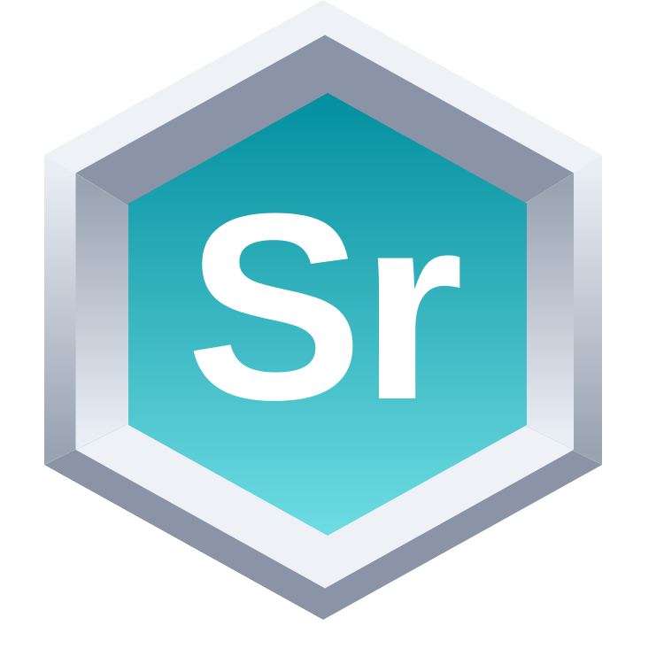
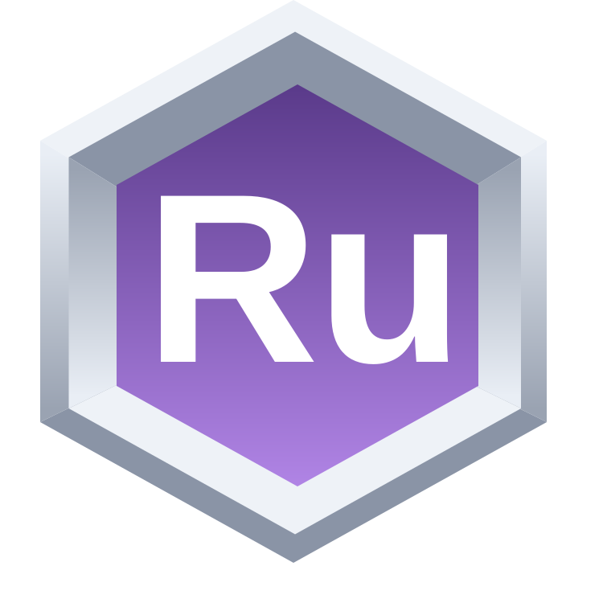

Architecture & Transformation
Ailtire and Treoir support architecture modeling, transformation design, and reusable operating artifacts.
Open, vendor-neutral tools that respect your constraints and accelerate outcomes across People, Process, Policy, and Technology.
Use this page when you want product-level support in addition to assessments, workshops, or advisory. These tools are built to help teams operationalize architecture, content, data, and workflow execution in secure environments.
Paidar develops and uses specialized tools where architecture, data, content, and workflow requirements demand capabilities beyond standard platforms. The software reinforces our implementation expertise by helping teams move from decisions and designs into secure, repeatable operating practice.
Ailtire and Treoir support architecture modeling, transformation design, and reusable operating artifacts.
Tuig and Sruth support SME-guided data transformation, knowledge capture, and resilient data movement.
Runaire connects tools and orchestrates guarded workflows for practical execution.
Guthan supports AI-enabled content and publication operations, including podcast automation as an initial use case.
System Architecture - Developer Tooling
What problem does it solve? Architecture teams need to turn complex system knowledge into reusable, understandable designs.
Who is it for? Enterprise architects, engineering leaders, and transformation teams.
When would Paidar use it? When a client needs to map a current environment, compare target states, or create architecture artifacts during design and implementation.
What outcome does it enable? A shared architecture baseline and reusable designs that support better decisions and controlled change.
AI-Enabled Content and Publication Operations
What problem does it solve? Content teams spend too much time moving material between scripting, production, translation, review, and publication.
Who is it for? Publishers, communications teams, and organizations operating recurring audio or multimedia programs.
When would Paidar use it? When content operations need a repeatable workflow that preserves editorial review while reducing manual handoffs.
What outcome does it enable? More consistent content production and publication with traceable quality checks.

Intelligent Distributed Data Streams
What problem does it solve? Teams need dependable data movement when networks are distributed, intermittent, or constrained.
Who is it for? Platform, data, and mission teams operating across cloud, edge, and on-premises environments.
When would Paidar use it? When implementation depends on reliable data delivery, routing, prioritization, and observability across difficult operating conditions.
What outcome does it enable? Resilient data flows that keep priority work moving while preserving security and operational visibility.
AI Data Transformation with SME-in-the-Loop
What problem does it solve? Valuable data is inconsistent, difficult to interpret, and dependent on knowledge held by a few subject-matter experts.
Who is it for? Data stewards, domain experts, architects, and teams modernizing legacy information.
When would Paidar use it? When a workflow needs expert-guided mapping, validation, schema alignment, or repeatable transformation rules.
What outcome does it enable? More usable, consistent data with domain knowledge captured for ongoing work.
AI Enabled Enterprise Architecture
What problem does it solve? Organizations struggle to connect strategic intent, operating processes, systems, and physical constraints in one usable architecture view.
Who is it for? Enterprise architects, executives, and delivery teams aligning transformation work.
When would Paidar use it? When a client needs a shared descriptive architecture baseline before selecting priorities, redesigning workflows, or sequencing implementation.
What outcome does it enable? Clearer architecture decisions and reusable views that connect organizational change to technical work.

AI Personal Assistant
What problem does it solve? Teams lose time coordinating routine work across disconnected tools and unclear handoffs.
Who is it for? Leaders, operators, and delivery teams that need guarded workflow automation.
When would Paidar use it? When an implementation requires practical orchestration across calendars, projects, communication, or customer systems.
What outcome does it enable? More consistent execution with visible ownership, reusable workflows, and controls around automated action.